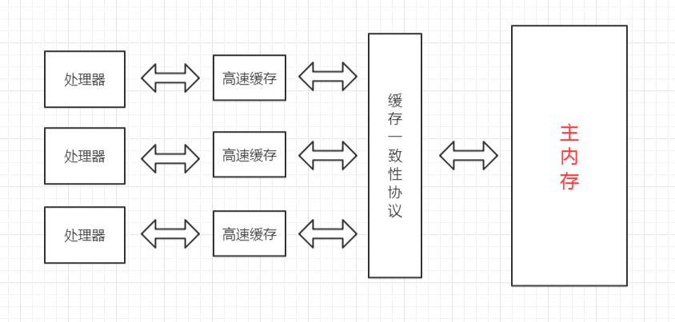
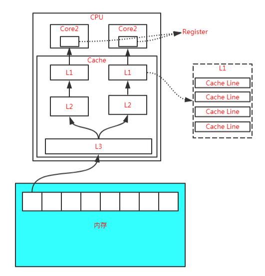
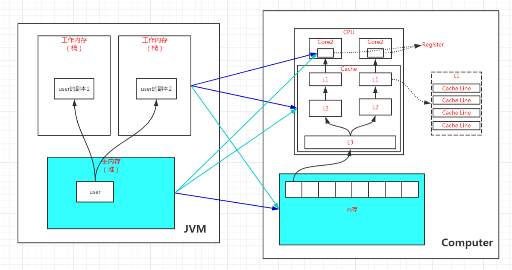

Java内存模型是在硬件内存模型上的更高层的抽象，它屏蔽了各种硬件和操作系统访问的差异性，保证了Java程序在各种平台下对内存的访问都能达到一致的效果。
简介
Java内存模型是在硬件内存模型上的更高层的抽象，它屏蔽了各种硬件和操作系统访问的差异性，保证了Java程序在各种平台下对内存的访问都能达到一致的效果。
硬件内存模型
在正式讲解Java的内存模型之前，我们有必要先了解一下硬件层面的一些东西。
在现代计算机的硬件体系中，CPU的运算速度是非常快的，远远高于它从存储介质读取数据的速度，这里的存储介质有很多，比如磁盘、光盘、网卡、内存等，这些存储介质有一个很明显的特点——距离CPU越近的存储介质往往越小越贵越快，距离CPU越远的存储介质往往越大越便宜越慢。
所以，在程序运行的过程中，CPU大部分时间都浪费在了磁盘IO、网络通讯、数据库访问上，如果不想让CPU在那里白白等待，我们就必须想办法去把CPU的运算能力压榨出来，否则就会造成很大的浪费，而让CPU同时去处理多项任务则是最容易想到的，也是被证明非常有效的压榨手段，这也就是我们常说的“并发执行”。
但是，让CPU并发地执行多项任务并不是那么容易实现的事，因为所有的运算都不可能只依靠CPU的计算就能完成，往往还需要跟内存进行交互，如读取运算数据、存储运算结果等。
前面我们也说过了，CPU与内存的交互往往是很慢的，所以这就要求我们要想办法在CPU和内存之间建立一种连接，使它们达到一种平衡，让运算能快速地进行，而这种连接就是我们常说的“高速缓存”。
高速缓存的速度是非常接近CPU的，但是它的引入又带来了新的问题，现代的CPU往往是有多个核心的，每个核心都有自己的缓存，而多个核心之间是不存在时间片的竞争的，它们可以并行地执行，那么，怎么保证这些缓存与主内存中的数据的一致性就成为了一个难题。
为了解决缓存一致性的问题，多个核心在访问缓存时要遵循一些协议，在读写操作时根据协议来操作，这些协议有MSI、MESI、MOSI等，它们定义了何时应该访问缓存中的数据、何时应该让缓存失效、何时应该访问主内存中的数据等基本原则。

而随着CPU能力的不断提升，一层缓存就无法满足要求了，就逐渐衍生出了多级缓存。
按照数据读取顺序和CPU的紧密程度，CPU的缓存可以分为一级缓存（L1）、二级缓存（L2）、三级缓存（L3），每一级缓存存储的数据都是下一级的一部分。
这三种缓存的技术难度和制作成本是相对递减的，容量也是相对递增的。
所以，在有了多级缓存后，程序的运行就变成了：
当CPU要读取一个数据的时候，先从一级缓存中查找，如果没找到再从二级缓存中查找，如果没找到再从三级缓存中查找，如果没找到再从主内存中查找，然后再把找到的数据依次加载到多级缓存中，下次再使用相关的数据直接从缓存中查找即可。
而加载到缓存中的数据也不是说用到哪个就加载哪个，而是加载内存中连续的数据，一般来说是加载连续的64个字节，因此，如果访问一个 long 类型的数组时，当数组中的一个值被加载到缓存中时，另外 7 个元素也会被加载到缓存中，这就是“缓存行”的概念。

缓存行虽然能极大地提高程序运行的效率，但是在多线程对共享变量的访问过程中又带来了新的问题，也就是非常著名的“伪共享”。
关于伪共享的问题，我们这里就不展开讲了，有兴趣的可以看彤哥之前发布的【杂谈 什么是伪共享（false sharing）？】章节的相关内容。
除此之外，为了使CPU中的运算单元能够充分地被利用，CPU可能会对输入的代码进行乱序执行优化，然后在计算之后再将乱序执行的结果进行重组，保证该结果与顺序执行的结果一致，但并不保证程序中各个语句计算的先后顺序与代码的输入顺序一致，因此，如果一个计算任务依赖于另一个计算任务的结果，那么其顺序性并不能靠代码的先后顺序来保证。
与CPU的乱序执行优化类似，java虚拟机的即时编译器也有类似的指令重排序优化。
为了解决上面提到的多个缓存读写一致性以及乱序排序优化的问题，这就有了内存模型，它定义了共享内存系统中多线程读写操作行为的规范。
Java内存模型
Java内存模型（Java Memory Model，JMM）是在硬件内存模型基础上更高层的抽象，它屏蔽了各种硬件和操作系统对内存访问的差异性，从而实现让Java程序在各种平台下都能达到一致的并发效果。
Java内存模型定义了程序中各个变量的访问规则，即在虚拟机中将变量存储到内存和从内存中取出这样的底层细节。这里所说的变量包括实例字段、静态字段，但不包括局部变量和方法参数，因为它们是线程私有的，它们不会被共享，自然不存在竞争问题。
为了获得更好的执行效能，Java内存模型并没有限制执行引擎使用处理器的特定寄存器或缓存来和主内存进行交互，也没有限制即时编译器调整代码的执行顺序等这类权利。
Java内存模型规定了所有的变量都存储在主内存中，这里的主内存跟介绍硬件时所用的名字一样，两者可以类比，但此处仅指虚拟机中内存的一部分。
除了主内存，每条线程还有自己的工作内存，此处可与CPU的高速缓存进行类比。工作内存中保存着该线程使用到的变量的主内存副本的拷贝，线程对变量的操作都必须在工作内存中进行，包括读取和赋值等，而不能直接读写主内存中的变量，不同的线程之间也无法直接访问对方工作内存中的变量，线程间变量值的传递必须通过主内存来完成。
线程、工作内存、主内存三者的关系如下图所示：

注意，这里所说的主内存、工作内存跟Java虚拟机内存区域划分中的堆、栈是不同层次的内存划分，如果两者一定要勉强对应起来，主内存主要对应于堆中对象的实例部分，而工作内存主要对应与虚拟机栈中的部分区域。
从更低层次来说，主内存主要对应于硬件内存部分，工作内存主要对应于CPU的高速缓存和寄存器部分，但也不是绝对的，主内存也可能存在于高速缓存和寄存器中，工作内存也可能存在于硬件内存中。

内存间的交互操作
关于主内存与工作内存之间具体的交互协议，Java内存模型定义了以下8种具体的操作来完成：
（1）lock，锁定，作用于主内存的变量，它把主内存中的变量标识为一条线程独占状态；
（2）unlock，解锁，作用于主内存的变量，它把锁定的变量释放出来，释放出来的变量才可以被其它线程锁定；
（3）read，读取，作用于主内存的变量，它把一个变量从主内存传输到工作内存中，以便后续的load操作使用；
（4）load，载入，作用于工作内存的变量，它把read操作从主内存得到的变量放入工作内存的变量副本中；
（5）use，使用，作用于工作内存的变量，它把工作内存中的一个变量传递给执行引擎，每当虚拟机遇到一个需要使用到变量的值的字节码指令时将会执行这个操作；
（6）assign，赋值，作用于工作内存的变量，它把一个从执行引擎接收到的变量赋值给工作内存的变量，每当虚拟机遇到一个给变量赋值的字节码指令时使用这个操作；
（7）store，存储，作用于工作内存的变量，它把工作内存中一个变量的值传递到主内存中，以便后续的write操作使用；
（8）write，写入，作用于主内存的变量，它把store操作从工作内存得到的变量的值放入到主内存的变量中；
如果要把一个变量从主内存复制到工作内存，那就要按顺序地执行read和load操作，同样地，如果要把一个变量从工作内存同步回主内存，就要按顺序地执行store和write操作。注意，这里只说明了要按顺序，并没有说一定要连续，也就是说可以在read与load之间、store与write之间插入其它操作。比如，对主内存中的变量a和b的访问，可以按照以下顺序执行：
read a -> read b -> load b -> load a。
另外，Java内存模型还定义了执行上述8种操作的基本规则：
（1）不允许read和load、store和write操作之一单独出现，即不允许出现从主内存读取了而工作内存不接受，或者从工作内存回写了但主内存不接受的情况出现；
（2）不允许一个线程丢弃它最近的assign操作，即变量在工作内存变化了必须把该变化同步回主内存；
（3）不允许一个线程无原因地（即未发生过assign操作）把一个变量从工作内存同步回主内存；
（4）一个新的变量必须在主内存中诞生，不允许工作内存中直接使用一个未被初始化（load或assign）过的变量，换句话说就是对一个变量的use和store操作之前必须执行过load和assign操作；
（5）一个变量同一时刻只允许一条线程对其进行lock操作，但lock操作可以被同一个线程执行多次，多次执行lock后，只有执行相同次数的unlock操作，变量才能被解锁。
（6）如果对一个变量执行lock操作，将会清空工作内存中此变量的值，在执行引擎使用这个变量前，需要重新执行load或assign操作初始化变量的值；
（7）如果一个变量没有被lock操作锁定，则不允许对其执行unlock操作，也不允许unlock一个其它线程锁定的变量；
（8）对一个变量执行unlock操作之前，必须先把此变量同步回主内存中，即执行store和write操作；
注意，这里的lock和unlock是实现synchronized的基础，Java并没有把lock和unlock操作直接开放给用户使用，但是却提供了两个更高层次的指令来隐式地使用这两个操作，即moniterenter和moniterexit。
原子性、可见性、有序性
Java内存模型就是为了解决多线程环境下共享变量的一致性问题，那么一致性包含哪些内容呢？
一致性主要包含三大特性：原子性、可见性、有序性，下面我们就来看看Java内存模型是怎么实现这三大特性的。
（1）原子性
原子性是指一段操作一旦开始就会一直运行到底，中间不会被其它线程打断，这段操作可以是一个操作，也可以是多个操作。
由Java内存模型来直接保证的原子性操作包括read、load、user、assign、store、write这两个操作，我们可以大致认为基本类型变量的读写是具备原子性的。
如果应用需要一个更大范围的原子性，Java内存模型还提供了lock和unlock这两个操作来满足这种需求，尽管不能直接使用这两个操作，但我们可以使用它们更具体的实现synchronized来实现。
因此，synchronized块之间的操作也是原子性的。
（2）可见性
可见性是指当一个线程修改了共享变量的值，其它线程能立即感知到这种变化。
Java内存模型是通过在变更修改后同步回主内存，在变量读取前从主内存刷新变量值来实现的，它是依赖主内存的，无论是普通变量还是volatile变量都是如此。
普通变量与volatile变量的主要区别是是否会在修改之后立即同步回主内存，以及是否在每次读取前立即从主内存刷新。因此我们可以说volatile变量保证了多线程环境下变量的可见性，但普通变量不能保证这一点。
除了volatile之外，还有两个关键字也可以保证可见性，它们是synchronized和final。
synchronized的可见性是由“对一个变量执行unlock操作之前，必须先把此变量同步回主内存中，即执行store和write操作”这条规则获取的。
final的可见性是指被final修饰的字段在构造器中一旦被初始化完成，那么其它线程中就能看见这个final字段了。
（3）有序性
Java程序中天然的有序性可以总结为一句话：如果在本线程中观察，所有的操作都是有序的；如果在另一个线程中观察，所有的操作都是无序的。
前半句是指线程内表现为串行的语义，后半句是指“指令重排序”现象和“工作内存和主内存同步延迟”现象。
Java中提供了volatile和synchronized两个关键字来保证有序性。
volatile天然就具有有序性，因为其禁止重排序。
synchronized的有序性是由“一个变量同一时刻只允许一条线程对其进行lock操作”这条规则获取的。
先行发生原则（Happens-Before）
如果Java内存模型的有序性都只依靠volatile和synchronized来完成，那么有一些操作就会变得很啰嗦，但是我们在编写Java并发代码时并没有感受到，这是因为Java语言天然定义了一个“先行发生”原则，这个原则非常重要，依靠这个原则我们可以很容易地判断在并发环境下两个操作是否可能存在竞争冲突问题。
先行发生，是指操作A先行发生于操作B，那么操作A产生的影响能够被操作B感知到，这种影响包括修改了共享内存中变量的值、发送了消息、调用了方法等。
下面我们看看Java内存模型定义的先行发生原则有哪些：
（1）程序次序原则
在一个线程内，按照程序书写的顺序执行，书写在前面的操作先行发生于书写在后面的操作，准确地讲是控制流顺序而不是代码顺序，因为要考虑分支、循环等情况。
（2）监视器锁定原则
一个unlock操作先行发生于后面对同一个锁的lock操作。
（3）volatile原则
对一个volatile变量的写操作先行发生于后面对该变量的读操作。
（4）线程启动原则
对线程的start()操作先行发生于线程内的任何操作。
（5）线程终止原则
线程中的所有操作先行发生于检测到线程终止，可以通过Thread.join()、Thread.isAlive()的返回值检测线程是否已经终止。
（6）线程中断原则
对线程的interrupt()的调用先行发生于线程的代码中检测到中断事件的发生，可以通过Thread.interrupted()方法检测是否发生中断。
（7）对象终结原则
一个对象的初始化完成（构造方法执行结束）先行发生于它的finalize()方法的开始。
（8）传递性原则
如果操作A先行发生于操作B，操作B先行发生于操作C，那么操作A先行发生于操作C。
这里说的“先行发生”与“时间上的先发生”没有必然的关系。
比如，下面的代码：
int a = 0;
// 操作A：线程1对进行赋值操作
a = 1;
// 操作B：线程2获取a的值
int b = a;
复制代码
如果线程1在时间顺序上先对a进行赋值，然后线程2再获取a的值，这能说明操作A先行发生于操作B吗？
显然不能，因为线程2可能读取的还是其工作内存中的值，或者说线程1并没有把a的值刷新回主内存呢，这时候线程2读取到的值可能还是0。
所以，“时间上的先发生”不一定“先行发生”。
再看一个例子：
// 同一个线程中
int i = 1;
int j = 2;
复制代码
根据第一条程序次序原则，int i = 1;先行发生于int j = 2;，但是由于处理器优化，可能导致int j = 2;先执行，但是这并不影响先行发生原则的正确性，因为我们在这个线程中并不会感知到这点。
所以，“先行发生”不一定“时间上先发生”。
总结
（1）硬件内存架构使得我们必须建立内存模型来保证多线程环境下对共享内存访问的正确性；
（2）Java内存模型定义了保证多线程环境下共享变量一致性的规则；
（3）Java内存模型提供了工作内存与主内存交互的8大操作：lock、unlock、read、load、use、assign、store、write；
（4）Java内存模型对原子性、可见性、有序性提供了一些实现；
（5）先行发生的8大原则：程序次序原则、监视器锁定原则、volatile原则、线程启动原则、线程终止原则、线程中断原则、对象终结原则、传递性原则；
（6）先行发生不等于时间上的先发生；